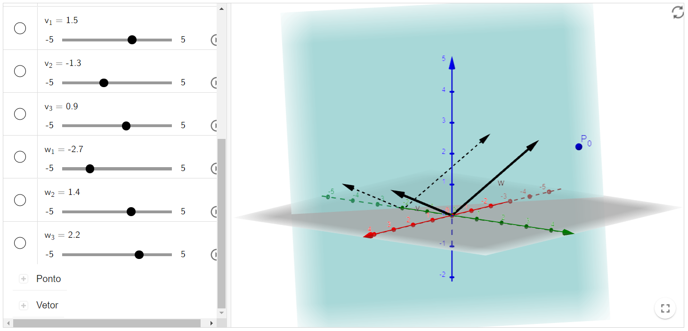

Revisão de Geometria Analítica
Equações paramétricas da reta no plano
Equação geral do plano
Definição:
Sejam $A, B$ e $C \in \mathbb{R}^{3}$ pontos não colineares. As equações paramétricas do plano $\pi$, que passa por tais pontos, é dada por:
$\pi: A+t \cdot \overrightarrow{A B}+s \cdot \overrightarrow{A C}$, onde $t, s \in \mathbb{R}$.
Nos problemas que você vai encontrar, pode ser que te apresentem três pontos não colineares pertencentes ao plano, ou um ponto e dois vetores, todos pertencentes ao plano também.
No segundo caso, basta você substituir os vetores $\overrightarrow{A B}$ e $\overrightarrow{A C}$ pelos vetores dados (note que é essencialmente a mesma coisa).
Equação geral do plano (com um ponto do plano e um vetor normal ao plano)
Definição:
Sejam $P_{0}=\left(x_{0}, y_{0}, z_{0}\right)$ um ponto pertencente ao plano $\pi$ e $\vec{\eta}=(a, b, c)$ um vetor normal a ele. Se $Q=(x, y, z)$ pertence a $\pi$, então:
$\overrightarrow{P Q} \cdot \vec{\eta}=0$, onde " $\cdot "$ simboliza o produto interno
Fazendo as contas:
$$\left(x-x_{0}, y-y_{0}, z-z_{0}\right) \cdot(a, b, c)=0 \Longrightarrow a x-a x_{0}+b y-b y_{0}+c z-c z_{0}=0$$
E, portanto, a equação cartesiana do plano $\pi$ é dada por: $$a x+b y+c z+d=0, \text { onde } d=-a x_{0}-b y_{0}-c z_{0}$$
Recursos computacionais
Equação Paramétrica da Reta no Plano
Abaixo, você vai encontrar um plano $\pi_{0}$, determinado através de um ponto $P_{0}=(a, b, c)$ e dois vetores $v=\left(v_{1}, v_{2}, v_{3}\right)$ e $w=\left(w_{1}, w_{2}, w_{3}\right)$.
Você terá a possibilidade de mudar tais parâmetros para aqueles da sua preferência. Em relação ao ponto, você pode, também, simplesmente arrastá-lo.
Livro Geogebra

Equação geral do plano (com um ponto do plano e um vetor normal ao plano)
Abaixo você encontrará um plano $\pi_{1}$ que foi gerado a partir de um ponto $P_{0}=\left(x_{0}, y_{0}, z_{0}\right)$ e um vetor $\vec{\eta}=(a, b, c)$ normal a ele. Você poderá mudar os parâmetros tanto do vetor, quanto do ponto. Além disso, você também pode simplesmente arrastar o ponto para onde for conveniente.
Livro Geogebra